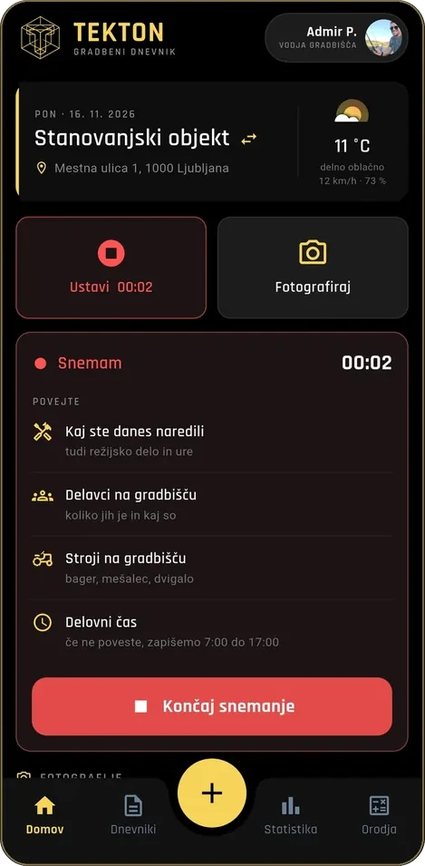
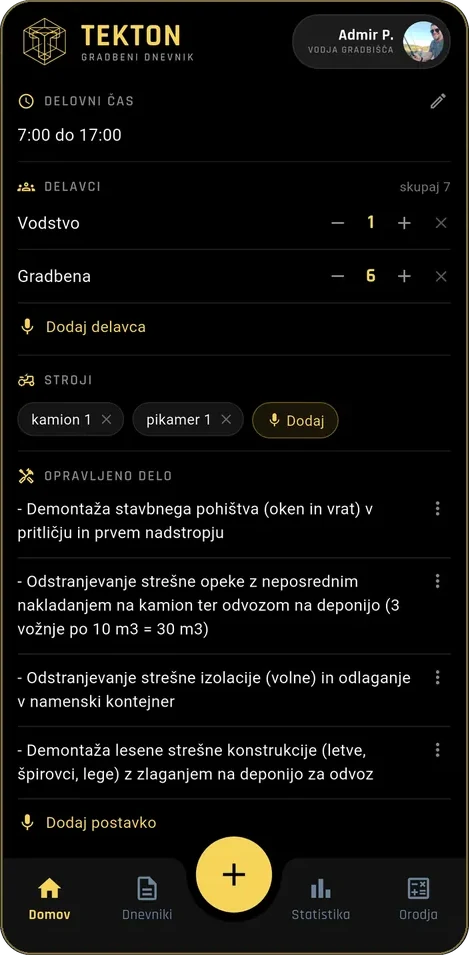

Digitalni gradbeni dnevnik z glasovnim vnosom
Tekton je aplikacija za Android za vodenje gradbenega dnevnika. Povejte, kaj ste danes delali, aplikacija pa iz posnetka sestavi dnevni list, pripravljen za tisk in podpis.
Brezplačni preizkusni paket. Brez registracije podjetja. Brez vezave.
Gradbeni dnevnik se piše zvečer, ko ni več volje
Gradbeni dnevnik je uradni zapis o tem, kaj se je na gradbišču dnevno dogajalo: opravljena dela, število delavcev in strojev, vreme in delovni čas.
Največkrat se piše zadnji, zvečer in po spominu. Takrat se pozabijo vožnje, režijske ure, število delavcev in stroji, ki so bili na gradbišču le dve uri.
Ob reklamaciji ali sporu o rokih je dnevnik pogosto najpomembnejši dokaz. Zato mora zapis nastati takrat, ko se delo dogaja. Tako dela Tekton: zapis nastane na gradbišču, ne zvečer.
Brez Tektona
- Pisanje zvečer, po spominu
- Vsak piše po svoje
- Vreme se prepisuje z interneta
- List se tipka v Wordu
S Tektonom
- Posnetek na gradbišču, takoj
- Enotna, strokovna oblika
- Vreme se pripiše samo
- PDF nastane sam
Kako deluje Tekton? V treh korakih do gradbenega dnevnika
Tekton sam izpolni dnevni list gradbenega dnevnika. Vpiše opravljeno delo, delavce po strokah, stroje, vreme in delovni čas. Na koncu so polja za podpis, podpišete pa na natisnjenem listu. Shranite ga kot PDF, natisnete ali pošljete naročniku.
-
Glasovni vnos
Pritisnite gumb Posnemi in povejte, kaj ste delali, koliko delavcev je bilo in katere stroje ste imeli na gradbišču. Govorite po domače, kot bi razložili sodelavcu. Delovni čas se samodejno izpolni od 7:00 do 17:00. Če je bil drugačen, ga samo povejte. Brez tipkanja.
- Kaj ste naredili
- Delavci
- Stroji
- Delovni čas

-
Samodejni zapis
Aplikacija vaš govor zapiše v strokovni gradbeni terminologiji. Dela razdeli v postavke, delavce razvrsti po strokah, stroje in ure pa zapiše na svoje mesto.
- Postavke del
- Delavci po strokah
- Stroji in ure

-
Pripravljen dnevni list
Dnevni list shranite kot PDF, ga natisnete ali delite naprej. Skupaj z njim lahko delite tudi fotografije gradbišča v datoteki ZIP.
- Tisk in podpis
Vse, kar aplikacija zapiše, lahko pred shranjevanjem popravite. Zadnjo besedo ima vedno vodja.
Tako je videti dnevni list, ki ga sestavi Tekton
To je pravi dnevni list iz aplikacije, le podatki so izmišljeni. Odprite ga in poglejte, kaj dobite.
- Opravljeno delo v postavkah, z izračuni pri pravi postavki
- Delavci po strokah in stroji
- Vreme za tri dele dneva
- Polja za podpis, ki jih podpišete na natisnjenem listu
Brezplačni preizkusni paket. Brez registracije podjetja. Brez vezave.
Kaj zna aplikacija Tekton za gradbeni dnevnik
Tekton je narejen samo za gradbeni dnevnik. Zato zna vse, kar pri tem potrebuje vodja gradbišča, od glasovnega vnosa do statistike.
-
Glasovni vnos
Delo opišete z glasom, v katerem koli jeziku in z lastnimi besedami, brez tipkanja. Tekton zapiše, kaj ste delali, v slovenščini, v strokovni gradbeni terminologiji.
-
Opravljeno delo v postavkah
Za vsako delo, ki ga naštejete, naredi postavko. Količine odvoza in prevoza ter režijsko delo se zapišejo same. Vsak izračun Tekton pripiše postavki, kamor spada. Zapiše samo to, kar poveste, ničesar ne dodaja.
-
Režijsko delo
Režijo aplikacija prepozna sama in jo pripiše pravi postavki. Povejte, koliko delavcev je delalo v režiji in koliko ur, aplikacija pa to uredno zapiše in izračuna. Režijski delavci se ne mešajo z delavci na gradbišču.
-
Delavci po strokah in stroji
Delavci, ki ste jih našteli, se razvrstijo po strokah, v vodstvo, gradbena, obrtna, instalacijska in druga dela. Pri strojih povejte, kateri stroj je bil na gradbišču in koliko jih je bilo. Vsak stroj dobi svojo vrstico.
-
Vreme in delovni čas
Vreme, temperatura, padavine in veter se pripišejo samodejno, glede na lokacijo gradbišča in čas, v treh obdobjih dneva. Delovni čas se izpolni sam, vi ga popravite le, če je bil drugačen.
-
Fotografije gradbišča
Fotografije posnamete v aplikaciji in ostanejo ob pripadajočem dnevnem listu. Shranijo se tudi v galerijo telefona.
-
Več projektov in statistika
Vsak projekt ima svoje dnevnike, fotografije in statistiko. Vidite skupne delovne ure, število delovnih dni, dneve z dežjem in ure po mesecih, za vse projekte skupaj ali za enega.
-
Hitra orodja
Kvadratura, kubatura, pretvornik enot in merilo za branje načrtov. Majhne stvari, ki jih na gradbišču potrebujete vsak dan.
Za koga je aplikacija za gradbeni dnevnik
Tekton je narejen za tiste, ki gradbeni dnevnik pišejo, in za tiste, ki ga potem berejo.
-
Vodja gradbišča
Dnevnik morate voditi, med delom pa za to ni časa. S Tektonom ga napišete v petih minutah, ne v pol ure zvečer.
-
Manjši izvajalec in obrtnik
Pri vas isti človek vodi delo, piše dnevnik in se dogovarja z naročnikom. Tu se prihranjen čas pozna najbolj.
-
Podizvajalec
Svoje delo morate dokazati glavnemu izvajalcu. Dnevnik z urami in fotografijami gradbišča je za to najboljši dokaz.
-
Nadzornik in investitor
Namesto prepisa iz zvezka dobite urejen in čitljiv dnevni list.
-
Vodje in delavci iz tujine
Tudi kdor slovensko ne piše, lahko delo opiše v svojem jeziku in s svojimi besedami. Tekton ga zapiše v slovenščini.
Za koga ni
Tekton ni program za vodenje gradbišča, ni terminski plan in ni obračun. Dela samo gradbeni dnevnik, zato ga dela dobro.
Če gradbeni dnevnik pišete vi, je Tekton narejen za vas
Prenesi iz Google PlayBrezplačni preizkusni paket. Brez registracije podjetja. Brez vezave.
Cenik aplikacije za gradbeni dnevnik
Začnete s preizkusnim paketom in na svojem gradbišču vidite, ali vam Tekton ustreza. Potem izberete paket glede na to, koliko gradbišč vodite.
-
Brezplačno
Da Tekton preizkusite na svojem gradbišču
0 €
Brez naročnine
- 15 dnevnih listov
- 1 aktiven projekt
- 10 glasovnih vnosov v petih urah
-
Pro
Za posameznika, ki vodi eno gradbišče
9,99 € na mesec
ali 79,99 € na leto, prihranite tretjino
- 1 aktiven projekt
- Neomejeno dnevnih listov
- 25 glasovnih vnosov v petih urah
-
Popularno
Business
Za manjšo ekipo
19,99 € na mesec
Samo mesečna naročnina
- Do 3 aktivni projekti
- Neomejeno dnevnih listov
- 50 glasovnih vnosov v petih urah
- Prednostna podpora
-
Master
Za podjetje z več gradbišči hkrati
49,99 € na mesec
ali 399 € na leto, prihranite tretjino
- Neomejeno projektov
- Neomejeno dnevnih listov
- 100 glasovnih vnosov v petih urah
- Podpora VIP
Dokup glasovnih vnosov
Dokupljeni vnosi ne potečejo in se porabijo šele, ko porabite vnose iz paketa.
- 20 vnosov 2,99 €
- 50 vnosov 5,99 €
- 150 vnosov 15,99 €
Plačilo teče prek Googla Play. Naročnino prekinete kadar koli.
Varnost in zasebnost vaših podatkov
Gradbeni dnevnik je dokument vašega podjetja. Zato morate vedeti, kje so vaši podatki in kdo jih vidi.
-
Fotografije in posnetki ostanejo v telefonu
Za zapis se obdelajo, shranijo pa se samo v vašem telefonu, ob dnevnem listu, ki mu pripadajo. Na naših strežnikih jih ni.
-
V oblaku je samo besedilo
Projekti in dnevni listi so shranjeni v oblaku in vezani na vaš račun, zato jih imate tudi na drugi napravi.
-
Vsak vidi samo svoje
Dostop je zaklenjen v sami bazi podatkov, ne samo v aplikaciji.
-
Lokacija samo za vreme
Aplikacija jo uporabi le za to, da dnevni list dobi vreme in kraj gradbišča.
-
Podatkov ne prodajamo
Ne delimo jih z oglaševalci. Uporabljajo se samo za delovanje aplikacije.
-
Račun izbrišete sami
V nastavitvah aplikacije, z dvema potrditvama. Z računom se izbrišejo tudi vsi vaši projekti in dnevniki.
Politika zasebnosti Pogoji uporabe
Plačila tečejo prek Googla Play, zato podatkov o vaši kartici ne vidimo.